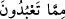
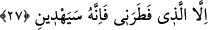
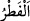
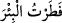
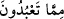
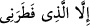

34. Evlerinin kapılarını ve üzerine yaslanacakları koltukları da (hep gümüşten
yapardık).
35. Ve onları zînetlere boğardık. Bütün bunlar sadece dünya hayatının
geçimliğidir. Âhiret ise, Rabbinin katında, Allah’ın azâbından sakınıp rahmetine
sığınanlara mahsustur.
Ey Peygamber (s.a.)! Kavmin Kureyş’e “İbrâhîm’in” ateşten çıkıp kurtulduktan
sonra, ağaç ve taş yontarak put yapan “babası” Âzer’e ve câhil babalarını taklîde ve
putlara ibadete kapaklanmış olan kavmine “Ben sizin taptıklarınızdan uzağım” sözünü
hatırlat. Böylece İbrâhim bu sözüyle kavminin içinde bulunduğu hâlden nasıl da
uzaklaşmış ve delile sarılmıştır. O halde Mekkeliler de ya istidlâl yoluna girsinler,
yahut ille de birini taklit edeceklerse esas büyük dedeleri olan İbrâhim (a.s.)’a uysunlar.
Zîrâ İbrâhim (a.s.) onların baba ve dedelerinin en şereflisidir.
Âyetteki “
” ibâresinde yer alan “mâ” masdariye olursa mânâ: “Ben sizin
Allah’tan başkasına ibâdet etmenizden uzağım” demek olur. Şâyet “mâ” mevsûle olup
ona âid zamir hazfedilmiş bulunursa bu sefer mânâ: “Ben sizin ibâdet ettiklerinizden
uzağım” demek olur.
27. Ben yalnız beni yaratana taparım. Çünkü O, beni doğru yola iletecektir.
“Ben yalnız beni yaratana taparım.” O’ndan uzaklaşmam. “Çünkü O, beni doğru
yola iletecek,” beni hidâyette sâbit kılacak yahut şu an hidâyet etmiş olduğu durumun
daha ileri seviyesine götürecek“tir.”
Şâyet bu insanlar putperest idiyseler bu istisnâ munkatı olur. Yani “beni yaratan
Allah’tan uzaklaşmam” demektir. “
/fatr” hiç benzeri olmaksızın yaratmayı başlatıp
îcâd etmek, yoktan var etmek, yaratmak demektir. Arapların “
/fatartü’l bi’re”
yani “kuyuyu yardım, açtım, kazdım” sözünden alınmıştır ki, hiçbir geçmişi ve aslı
olmaksızın “senin hafriyât ve kazıyla kuyuyu açman” demektir.
“
” ibâresindeki “mâ” edâtı ilim ve akıl sahibi olan Allah’ı ve diğerlerini
kapsayıcı olup, onlar da (klasik şirk ve müşrik anlayışı gibi) hem Allah’a hem de
putlara tapıyor idiyseler, bu sefer istisnâ muttasıl olur. Yahut “mâ” mevsûfe olursa bu
sefer “
/illellezi fataranî” cümlesi sıfat olur. Buna göre mânâ: “Elbette ben,
beni yaratan Allah hâriç sizin taptığınız ilahlardan uzağım” demek olur. Zîrâ “gayr”
mânâsında olan “illâ” kelimesi, sadece “âlihe” gibi sınırsız nekre çoğullardan sıfat olur.
İbn Hâcib’in görüşü de budur.